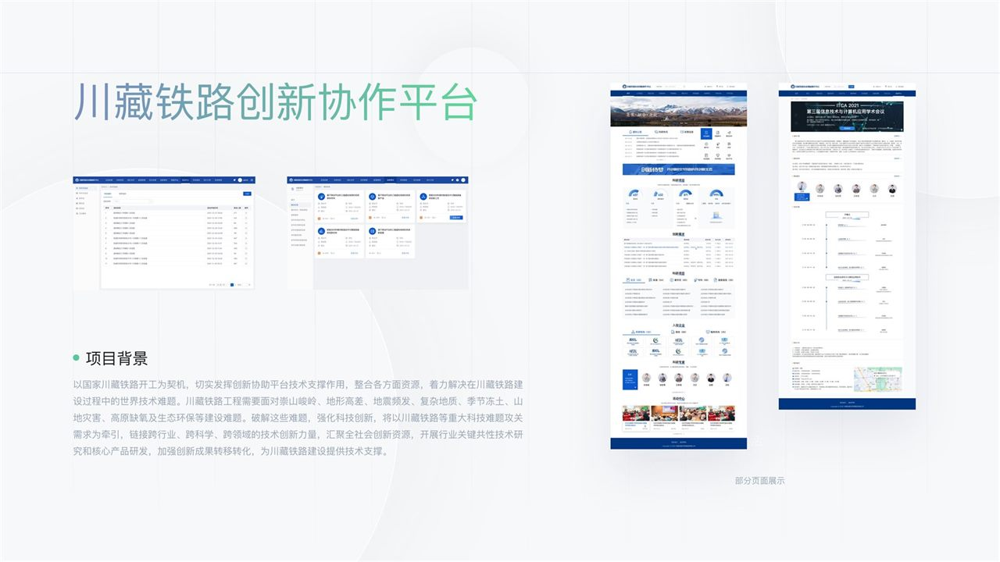
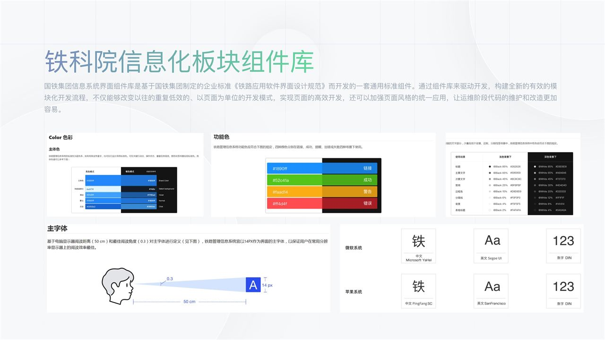
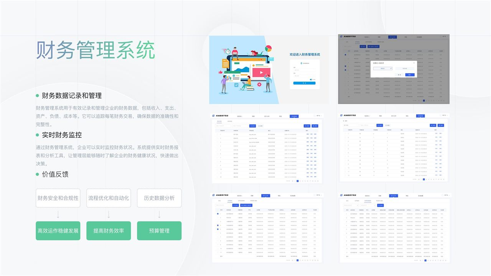
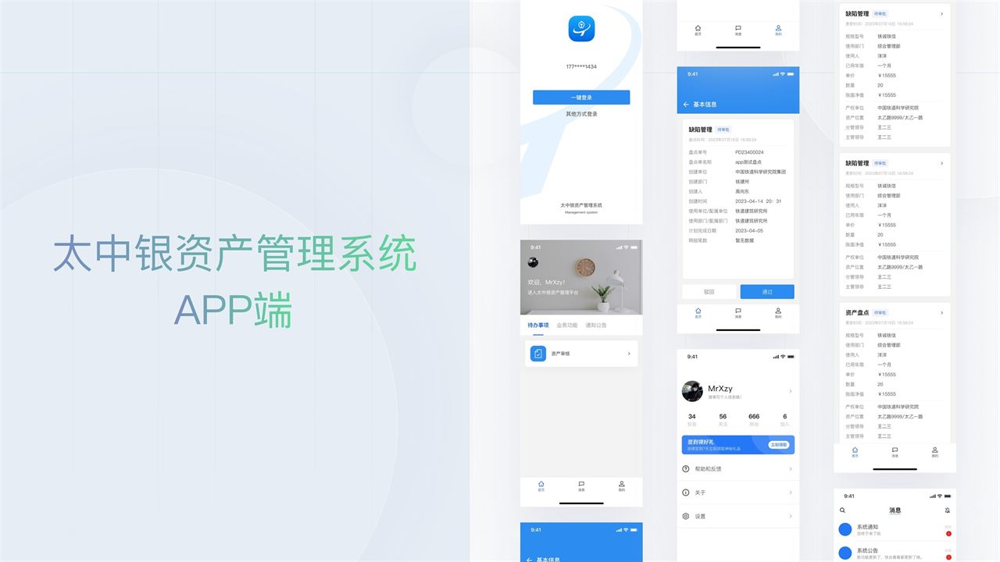
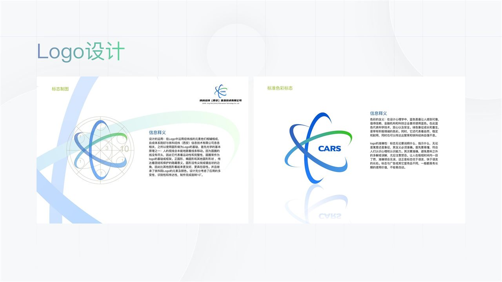
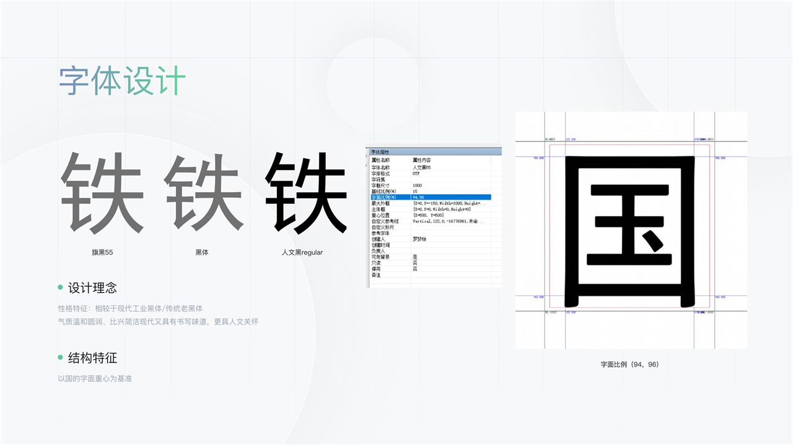
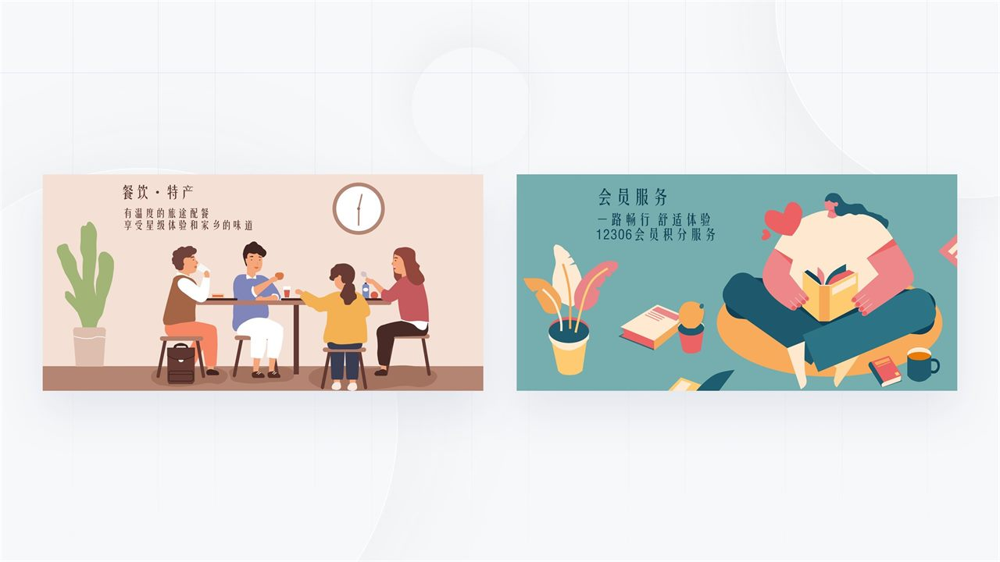

国家级重点项目
01 / WEB + 大屏主导 UI/UX 设计
国家川藏铁路技术创新中心
服务平台
从 0 到 1 搭建国家级重点工程配套平台，覆盖项目管理、科研成果、知识产权、知识交易与可视化大屏。
75%平台整体效率提升
查看案例
5 年 B 端产品 UI/UX 设计经验，深耕铁路信息化与政企数字化。擅长从需求分析、信息架构到视觉系统、规范输出的完整设计交付。
我是一名专注复杂业务场景的 B 端产品 UI/UX 设计师。
关注信息如何被理解、流程如何被完成，以及设计系统如何真正进入研发。


覆盖国家级平台、企业级管理系统、设计系统、品牌与字体。每一个项目都从真实业务出发，让结构更清楚、操作更高效。
从 0 到 1 搭建国家级重点工程配套平台，覆盖项目管理、科研成果、知识产权、知识交易与可视化大屏。
基于《铁路应用软件界面设计规范》建立统一组件，推动模块化开发与全集团界面一致性。
查看案例
统筹大型财务系统改版、组件迭代与业务逻辑优化，统一多角色操作视觉与交互体验。

基于用户调研重构信息架构与页面流程，打通 Web 与 APP 端的资产盘点、审核和待办体验。

以经纬线为核心识别元素，建立品牌标志、标准色、安全空间与应用规范。
查看案例
参与国铁宋黑体、国铁速黑体字库设计，完成 928 个字形，并沉淀验收标准与应用规范。
查看案例
将铁路出行场景转译为更具温度的品牌插画，用于餐饮、特产、会员服务等触点。
查看案例5 年产品设计经验，长期服务铁路信息化与政企数字化项目。
曾主导国家川藏铁路技术创新中心服务平台、广州铁路局财务管理系统、太中银资产管理系统等大型系统的从 0 到 1 建设与改版重构。
我能够独立完成需求分析、用户调研、信息架构、交互原型、视觉设计、设计规范与开发对接，也擅长把复杂项目沉淀为可复用的组件与标准。
从业务流程、角色权限到关键任务，把模糊需求转化为清晰的产品结构。
兼顾效率、一致性与可扩展性，建立适用于多模块、多角色的体验框架。
沉淀组件、色彩、字体与交互标准，让设计资产真正进入开发流程。
与产品、研发、业务方高效沟通，确保设计从概念走到稳定落地。
从大型国企信息化项目到独立设计委托，保持对复杂业务、交付质量与协作效率的关注。
独立承接 6 家中小企业设计委托，覆盖后台管理系统、小程序等类型，累计交付 80+ 页；设计方案满意度 95%。
面向国铁集团及下属路局交付 B 端产品，主导国家级平台、财务系统、资产管理、组件库与品牌字体等项目的 UI/UX 设计与规范输出。
负责美工部门日常规划与执行，配合各部门完成宣传物料设计与活动策划执行。
数字媒体艺术 · 本科｜2015.09 — 2019.06
有合适的机会或项目，欢迎直接联系。